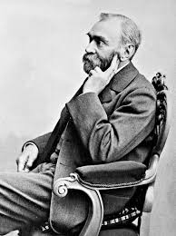

About Alfred Nobel

Alfred Nobel was born on October 21, 1833, in Stockholm, Sweden, and passed away on December 10, 1896, in Sanremo, Italy. He was a brilliant Swedish chemist, engineer, innovator, and armaments manufacturer. His most famous invention was dynamite, which revolutionized construction, mining, and engineering worldwide. In his final will, he devoted his vast fortune to establish the world-renowned Nobel Prizes.
Key Life Events
- 1833: Born in Stockholm, Sweden.
- 1867: Patented dynamite, making him world-famous and wealthy.
- 1895: Signed his last will and testament, establishing the Nobel Prizes.
- 1896: Passed away in Italy at the age of 63.
- 1901: The very first Nobel Prizes were awarded.
Key Inventions & Contributions
- Invention of Dynamite
- Patenting Gelignite and Ballistite
- Establishing the Nobel Prizes in Physics, Chemistry, Medicine, Literature, and Peace
- Holding 355 different international patents
Related Resources
Read more about his work on Alfred Nobel's Patents or view the list of Nobel Laureates.
Learn More